わたしのこと
2005年 北海道苫小牧市生まれ。
矯正治療の経験から歯科衛生士の学校へ進学し、歯科助手としてのアルバイトも経験。
しかし、医療実習を重ねる中で自身の適性を見つめ直し、中途半端な気持ちで向き合うのは患者様へ不誠実であると考え、悩んだ末に違う道に進むことを決意。
現在は、自分が心から「主体的に学びたい」と思える環境で、デザインやSNSマーケティングのスキルを磨いています。
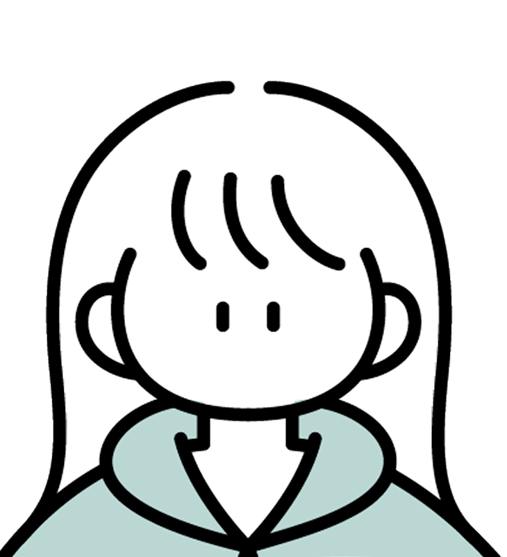
今までのお話
モノづくりへの興味
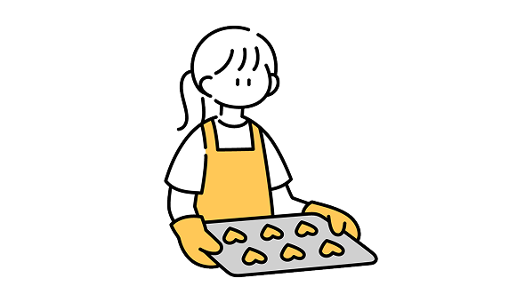
小さい頃からクリエイティブな活動が好きで、特にお菓子作りに夢中になっていました。
ラッピングまで可愛くこだわり、友達や家族にプレゼントし、相手が喜んでくれる瞬間に大きな幸せを感じていました。
「好き」を見つけた時間
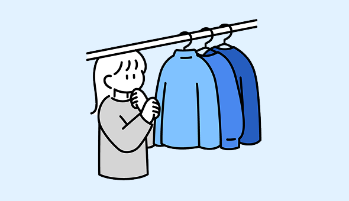
中学生になると洋服への関心が高まり、雑誌『non-no』や『Ray』を毎月読んでいました。
自分のお洒落に対するテイストやこだわりが、少しずつ明確になっていった時期です。
憧れが広げた世界
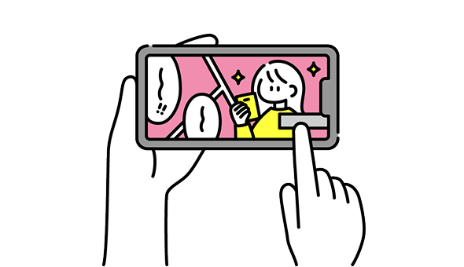
高校時代には「坂道グループ」に魅了され、彼女たちのコスメや着用服を調べる中で多くのブランドを知りました。
アルバイトで貯めたお金で服やコスメを買う機会が増え、日常的にECサイトを巡るようになります。その中でブランドごとの「世界観」に強く惹かれ、デザインの力に興味を持つきっかけとなりました。
「好き」を仕事に
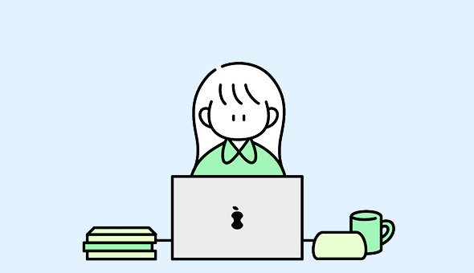
1度は歯科衛生士を目指し進学したものの、実習での葛藤から医療職への適性に悩み、自分に合った道について考えるようになりました。
自分の「好き」を形にして、誰かに届けることがしたいという思いから、現在は札幌デジタル＆どうぶつ・観光・医療専門学校でデザインを学んでいます。
スキル詳細
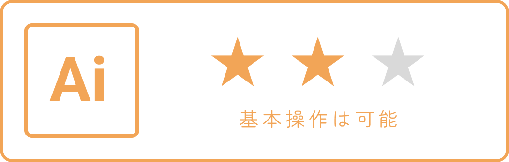
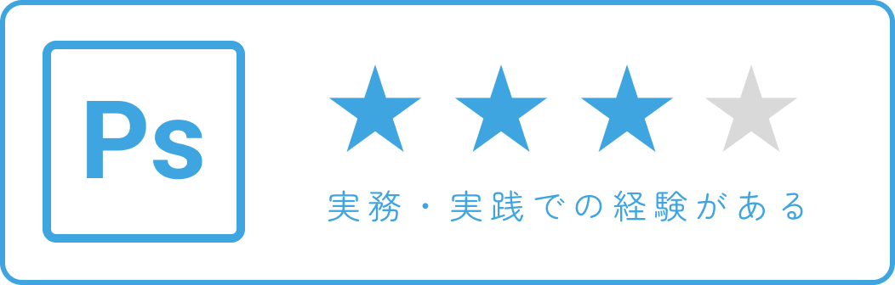
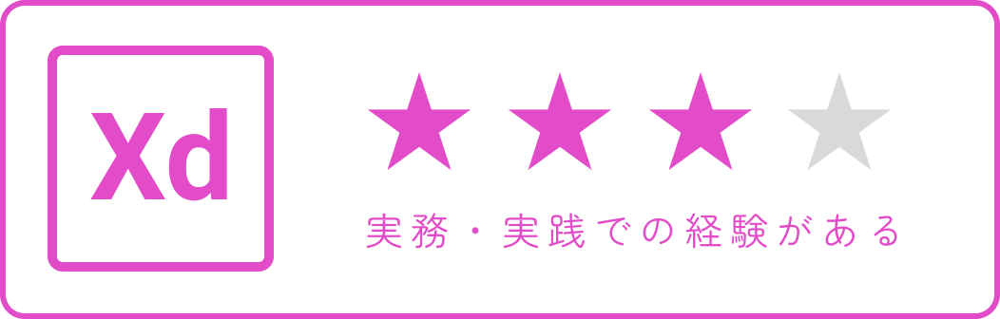
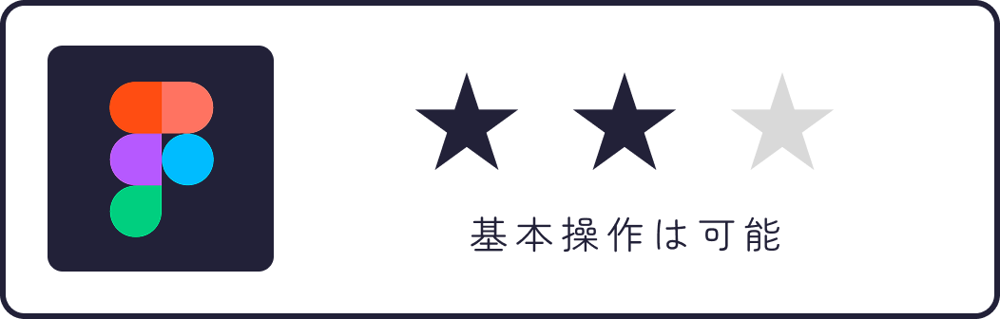
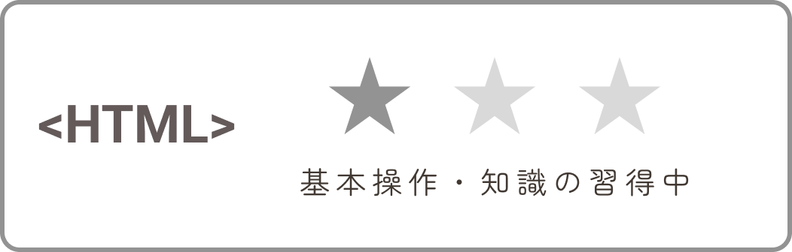
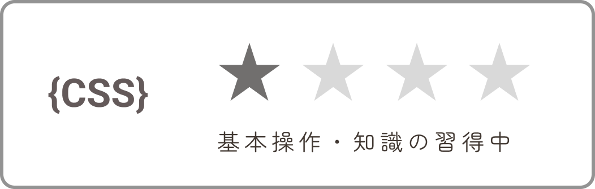
これからのこと
私の強みは、客観的な意見を柔軟に取り入れながらも、求められる質の一歩先まで妥協せず形にする力です。
ECサイトは、施策の結果が売上やCVRといった数字で明確に返ってくるため、感覚だけに頼らず、データを踏まえて柔軟に改善し続ける姿勢が欠かせません。
だからこそ私はこの強みを活かし、デザインを作って終わりにせず、数字の変化から次の改善提案へつなげ、成果に直結するアウトプットで貢献したいと考えています。
まずはデザイナー・コーダーとして、品質の高いデザインを実装できるスキルを磨いていきたいです。
そのうえで最終的には、貴社だからこそ身につけることができる、システムの制約まで考慮できるデザイン力・コーディング力・分析力のスキルを兼ね備え、ブランドと顧客の架け橋になり続けることを成し遂げたい目標としています。
わたしの興味・関心
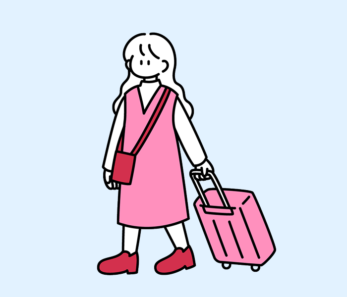
新しい場所へ行き、その土地の景色や空気感に触れることが好きです。長期休暇は友人と計画を立て色んな場所に行きます。最近は神社巡りも楽しんでいます♪
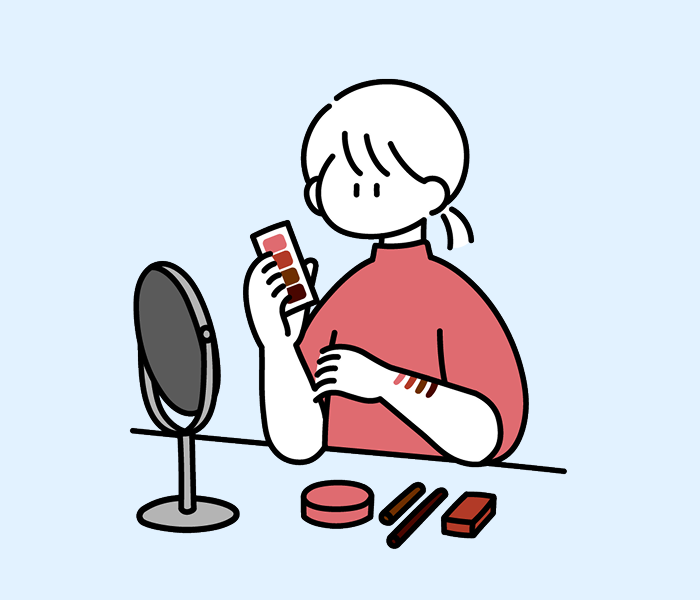
新作のお洋服やコスメ、デザイン性の高いものに惹かれます。日々変わるトレンドを追いかけたりお気に入りのアイテムを探すのが楽しいです。
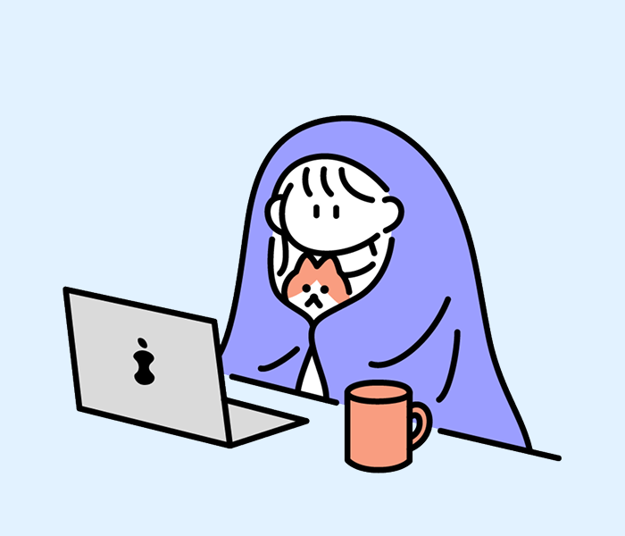
外に出ない休みの日はアニメを一気見したり、好きな漫画を読んだりして過ごすことが多いです。アニメの映画化などもよく見に行きます。